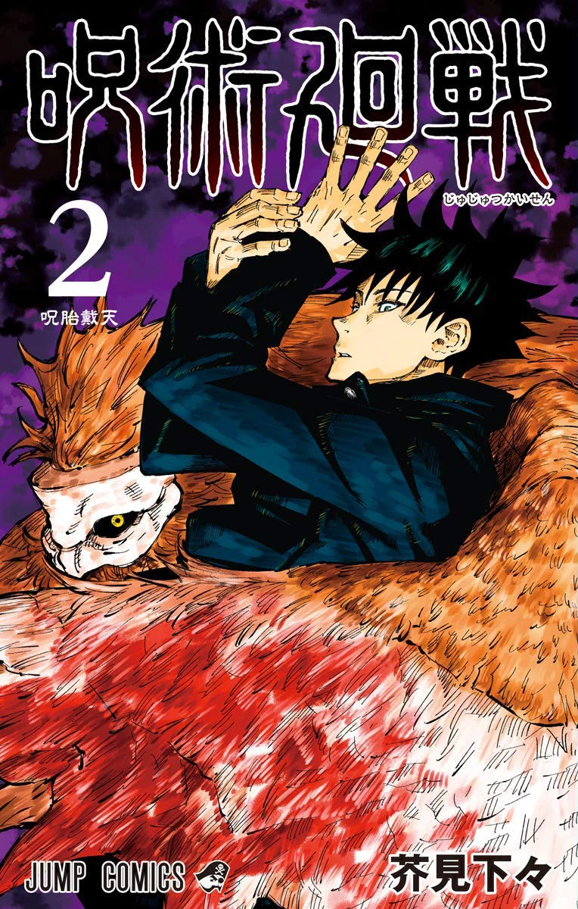

Main Characters
Previous
Next
Volumes & Chapters
0 Blinding Darkness
Chapters list:
000-1. The Cursed Child (呪のろいの子こ Noroi no Ko?)
000-2. Blacker and Blacker (黒くろく黒くろく Kuroku Kuroku?)
000-3. Punishment for the Weak (弱じゃく者じゃに罰ばつを Jakusha ni Batsu o?)
000-4. Bright Darkness (眩まぶしい闇やみ Mabushii Yami?)
1 Ryomen Sukuna
Chapters list:
001. Ryomen Sukuna (両りょう面めん宿すく儺な Ryōmen Sukuna?)
002. Secret Execution (秘ひ匿とく死し刑けい Hitoku Shikei?)
003. For Myself (自じ分ぶんのために Jibun no Tameni?)
004. Girl of Steel (鉄てっ骨こつ娘むすめ Tekkotsu Musume?)
005. Start (始はじまり Hajimari?)
006. Fearsome Womb (呪じゅ胎たい戴たい天てん Jutaitaiten?)
007. Fearsome Womb, Part 2 (呪じゅ胎たい戴たい天てんー弐にー Jutaitaiten -ni-?)
2 Fearsome Womb

Chapters list:
008. Fearsome Womb, Part 3 (呪じゅ胎たい戴たい天てんー参さんー Jutaitaiten -san-?)
009. Fearsome Womb, Part 4 (呪じゅ胎たい戴たい天てんー肆しー Jutaitaiten -shi-?)
010. After the Rain (雨う後ご Ugo?)
011. A Dream (ある夢む想そう Aru Musō?)
012. Pushing Forward (邁まい進しん Maishin?)
013. Watching Movies (映えい画が鑑かん賞しょう Eiga Kanshō?)
014. Assault (急きゅう襲しゅう Kyūshū?)
015. Domain (展てん開かい Tenkai?)
016. Affection (情じょう Jō?)
3 Young Fish and Reverse Punishment
Chapters list:
017. Boring (退たい屈くつ Taikutsu?)
018. Bottom (底てい辺へん Teihen?)
019. Young Fish and Reverse Punishment (幼よう魚ぎょと逆さか罰ばち Yōgyo to Sakabachi?)
020. Young Fish and Reverse Punishment, Part 2 (幼よう魚ぎょと逆さか罰ばちー弐にー Yōgyo to Sakabachi -ni-?)
021. Young Fish and Reverse Punishment, Part 3 (幼よう魚ぎょと逆さか罰ばちー参さんー Yōgyo to Sakabachi -san-?)
022. Young Fish and Reverse Punishment, Part 4 (幼よう魚ぎょと逆さか罰ばちー肆しー Yōgyo to Sakabachi -shi-?)
023. Young Fish and Reverse Punishment, Part 5 (幼よう魚ぎょと逆さか罰ばちー伍ごー Yōgyo to Sakabachi -go-?)
024. Young Fish and Reverse Punishment, Part 6 (幼よう魚ぎょと逆さか罰ばちー陸ろくー Yōgyo to Sakabachi -roku-?)
025. Narrow-Minded (固こ陋ろう蠢しゅん愚ぐ Korōshungu?)
4 I'm Gonna Kill You!
Chapters list:
026. To You Someday (いつかの君きみへ Itsuka no Kimi e?)
027. What If (もしも Moshimo?)
028. I'm Gonna Kill You! (殺ころしてやる Koro Shite Yaru?)
029. Growth (成せい長ちょう Seichō?)
030. Selfishness (我わが儘まま Wagamama?)
031. Tomorrow (また明日あした Mata Ashita?)
032. Introspection (反はん省せい Hansei?)
033. Kyoto Sister School Goodwill Event - Team Battle, Part 0 (京きょう都と姉し妹まい校こう交こう流りゅう会かいー団だん体たい戦せん⓪ー Kyōto Shimai-kō Kōryū-kai - Dantai-sen ⓪-?)
034. Kyoto Sister School Goodwill Event - Team Battle, Part 1 (京きょう都と姉し妹まい校こう交こう流りゅう会かいー団だん体たい戦せん①ー Kyōto Shimai-kō Kōryū-kai - Dantai-sen ①-?)